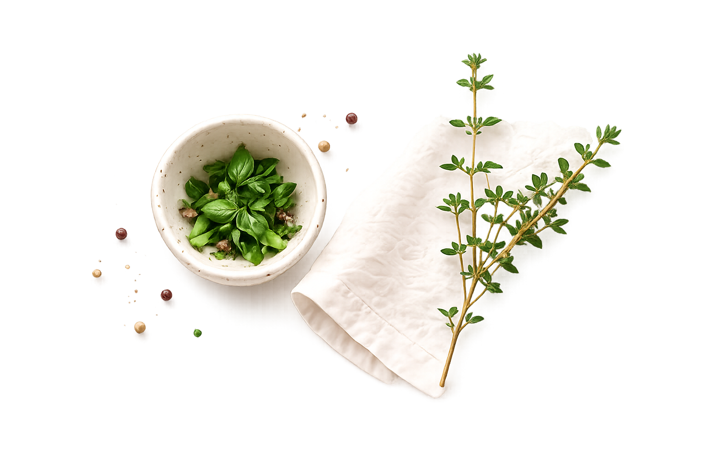

Ресурсы
Здесь собраны полезные материалы, которые помогли
в создании проекта и могут быть полезны вам для изучения,
вдохновения и развития.

из того, что есть
Здесь собраны полезные материалы, которые помогли
в создании проекта и могут быть полезны вам для изучения,
вдохновения и развития.
